Кто я? ( Who am I? )
I was born in Belarus, but I moved to another country when I was either ten, evelen or maybe even twelve years old - I don't really remember.
Firstly, I moved to Latvia where I had lived for almost a year, then me and my parents moved to Cyprus, again for a year. A year in Poland after that, few years on Cyprus once again
and now, here I am - in the Netherlands.
Finished with a history, now let me paint you a picture of who I am, by telling what I like:
- Listening to music (mainly Metalcore, but not only)
- Playing games
- Riding a bike
- Studying, coding and learning
- Cooking
- Playing guitar and piano
- Reading memes
- and more...
Fed up with text? Here are some visuals to really paint you the picture! Look:
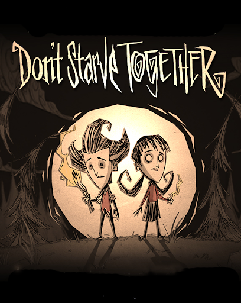
 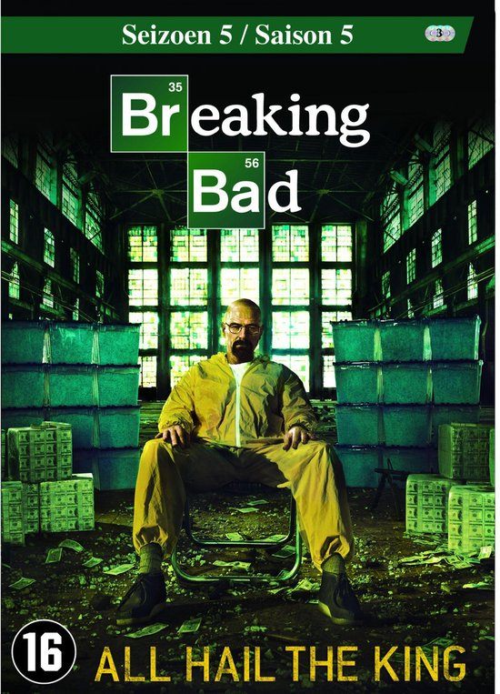
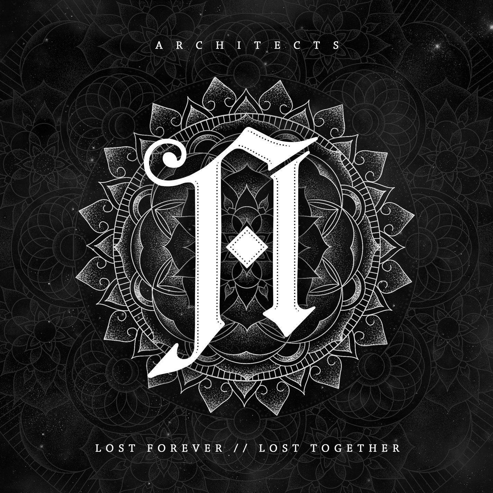
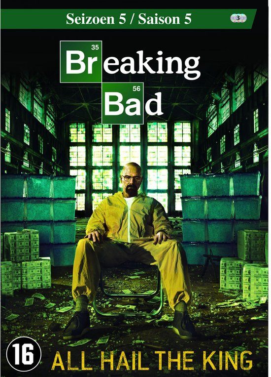
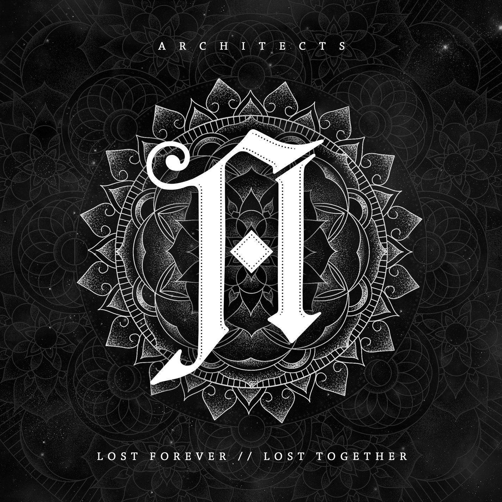
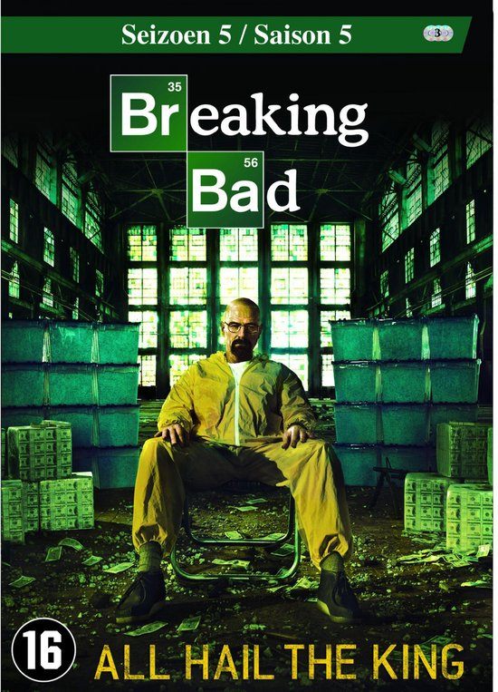
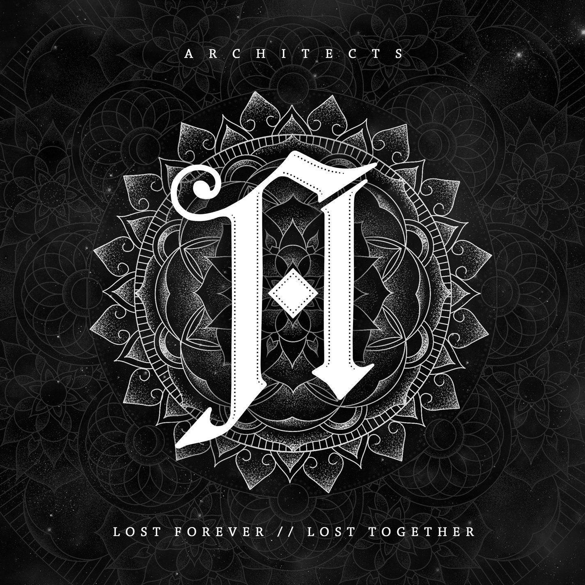


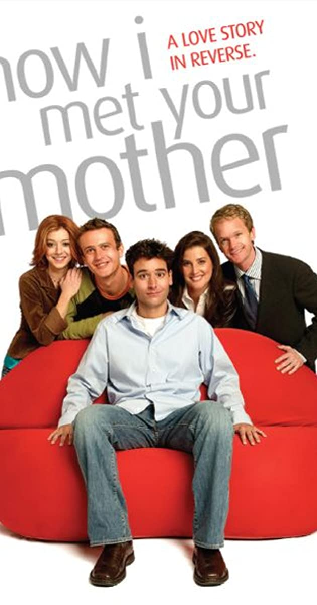
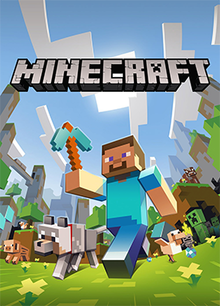


 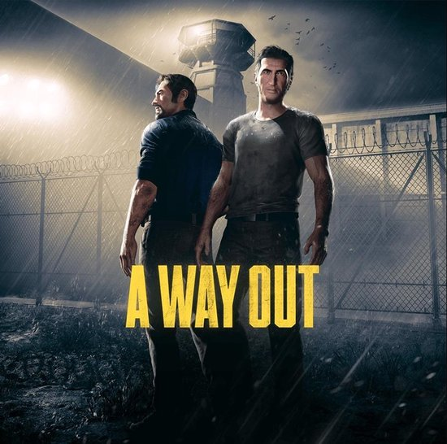
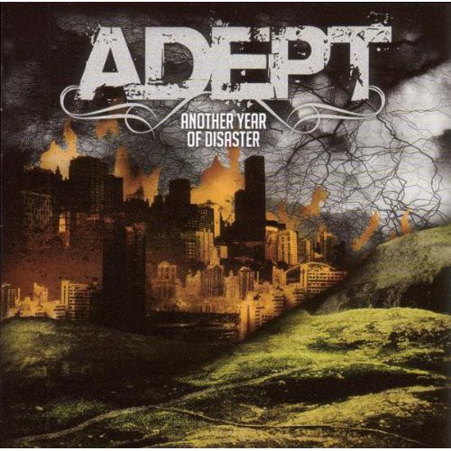
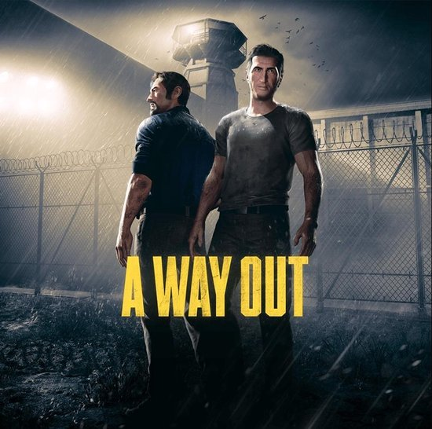
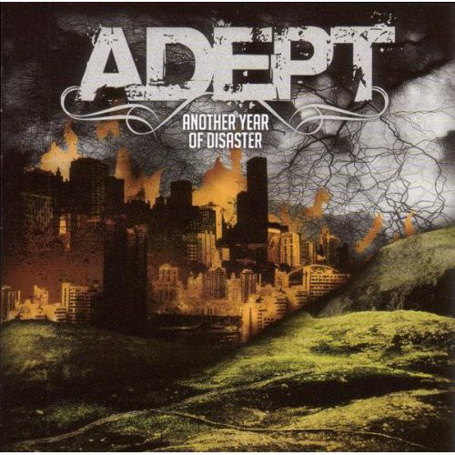